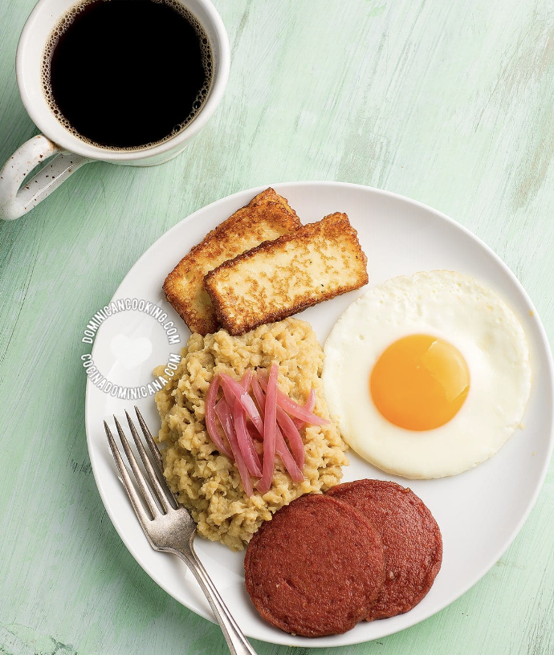

Mangu Dish - A Dominican Flavorness

Mangu con 3 golpes
This is the national breakfast of the Dominican Republic.
The main meal is green mashed plaintains accompained by
fried salami, fried cheese and fried eggs.
This meal is ideal for breakfast, but it does not stop Dominican Families
from having the same meal for dinner. Give it a try!
Ingredients
- Green plaintains
- Salami
- Eggs
- Cheese
- Onions
Cooking Steps
- Peel and boil green plaintains for 25 minutes
- Fry eggs
- Fry salami
- Fry cheese
- Fry onions
- Mash boiled plaintains, add butter and mix together
- Add fried onions on top of mashed plaintains
- Add fried salami, eggs and cheese to the side and serve
- Enjoy!